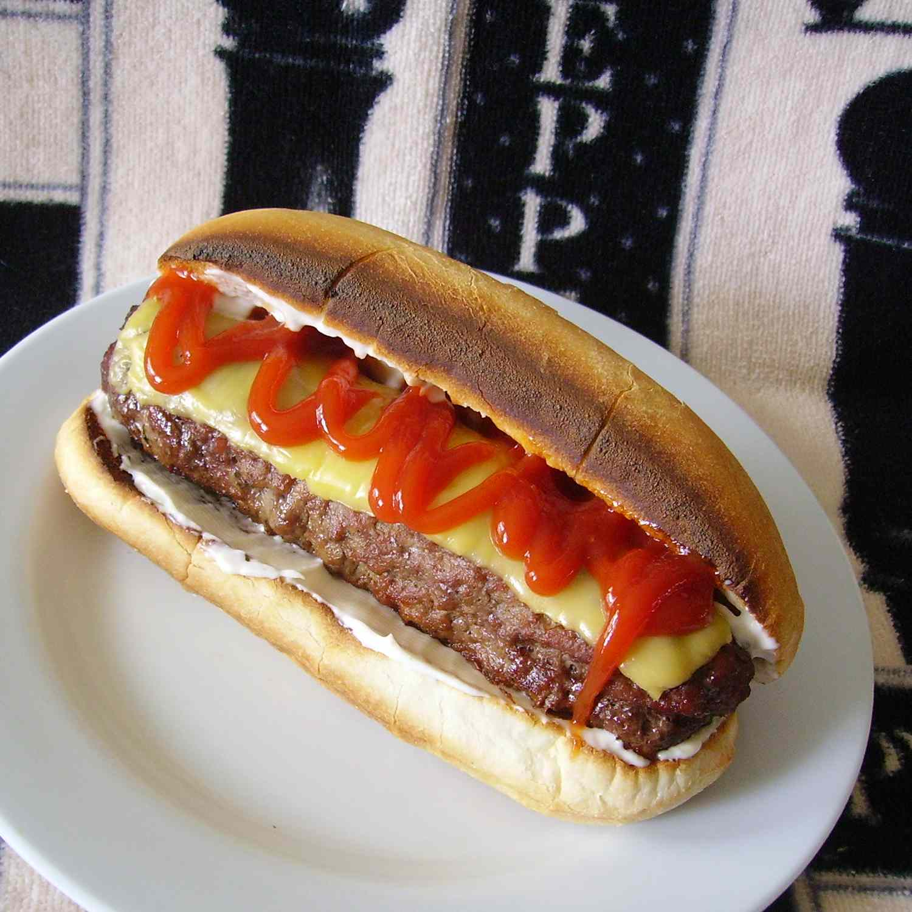

Back to All Recipes
The All-American Burger Dog

This 'burger dog' is far more than a hot dog-shaped cheeseburger.
It's a one-handed wonder that's perfectly proportioned and easier to eat than a regular cheeseburger.
The All-American Burger Dog is easy, cheap, delicious, and probably even healthier than your typical hot dog!
Here's what you'll need:
- 1 pound ground beef (80% lean)
- salt and freshly ground black pepper to taste
- 2 slices Cheddar cheese
- 2 extra-long hot dog buns
- 4 teaspoons mayonnaise
- 2 tablespoons ketchup
- Optional: Our very own Buns or Secret Sauce
Steps:
- Place half the ground beef on a sheet of plastic wrap. Pat it into a rectangular shape, about 1/2 inch thick, 8 1/2 inches long, and 4 inches wide. Season with salt and pepper. Roll the beef into a log, using the plastic wrap as a guide. Season with more salt and pepper. Wrap the plastic tightly around the log and twist both ends tight. Pat gently to slightly flatten. Repeat with remaining ground beef.
- Preheat an outdoor grill for medium-high heat and lightly oil the grate. Remove the burger dogs from the plastic wrap and place on the grill, perpendicular to the grates. Cook until burgers are browned but still pink inside, 4 to 5 minutes, flip, and cook another 2 to 3 minutes. Place a slice of cheese on each burger dog and grill to medium doneness (an instant-read thermometer inserted into the center should read at least 140 degrees F/60 degrees C). Remove and rest 3 to 4 minutes.
- Toast hot dog buns on the grill and spread each with 2 teaspoons mayonnaise. Place burger dog on each bun and squirt 1 tablespoon of ketchup on top.